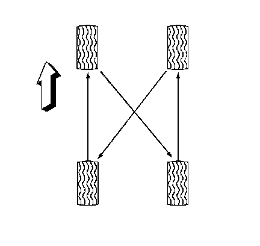

Tire Rotation
Tire Rotation
Tools Required
J 39544-KIT Torque Socket Set
Removal Procedure
In order to equalize wear, rotate the tires at the specified intervals. Refer to Maintenance Schedule (North American Emissions). In addition to scheduled rotation, rotate the tire and wheel assemblies whenever you notice uneven tire wear.
Radial tires tend to wear faster in the shoulder area, particularly in front positions, due to design. Radial tires in non-drive locations may develop an irregular wear pattern that can generate tire noise. This especially makes regular tire rotation necessary.
1. Raise and support the vehicle. Refer to Lifting and Jacking the Vehicle.
2. Remove the center caps from the wheels, if equipped.
3. Remove the tire and wheel assemblies.

4. Rotate the 4 wheels and tires as shown.
Installation Procedure
1. Install the tire and wheel assemblies.
2. Install the center caps, if equipped.
3. Lower the vehicle.
4. Check the tire pressure. Refer to the tire placard and adjust the tire pressure as necessary.
5. Perform the tire pressure sensor learn procedure, if equipped. Refer to Tire Pressure Sensor Learn.